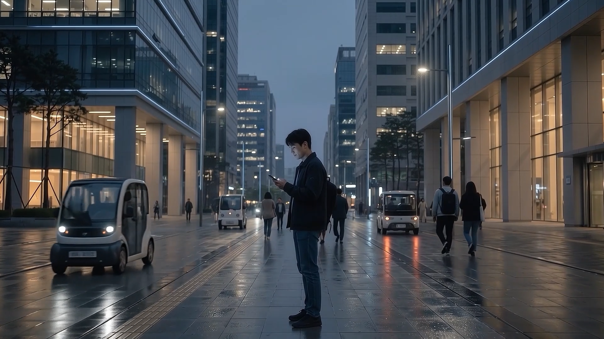
SC01NORMAL
연결을 의식하지 않는 일상
01 / AI BRAND FILM
Connection is invisible.
Until it disappears.
보이지 않는 연결의 가치를 ‘단절의 순간’으로 표현한 30초 Premium Near-Future AI Brand Film.
02 / CONCEPT
평소에는 의식하지 않는 네트워크가 사라졌을 때, 우리의 일상이 얼마나 많은 연결 위에서 작동하는지를 보여주고자 했습니다.
가상의 통신 브랜드 N:LINK를 설정하고 NORMAL → LOSS → FAILURE → RECONNECTION의 상태 변화로 ‘연결의 가치’를 시각화했습니다.
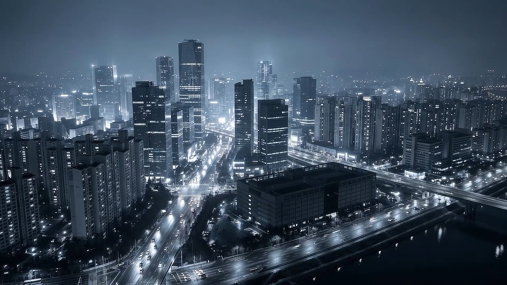
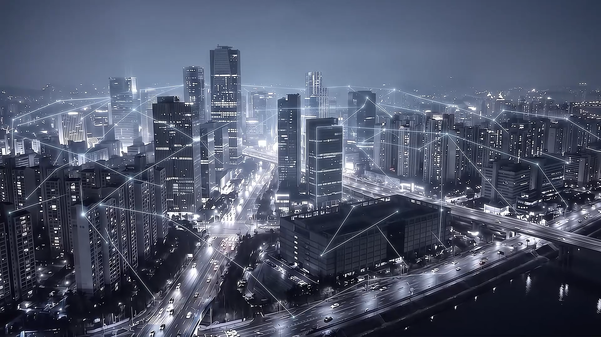
03 / STORY
장면마다 하나의 역할만 부여해 상태 변화가 빠르게 읽히도록 구성했습니다.

SC01연결을 의식하지 않는 일상
도시의 네트워크가 사라진다
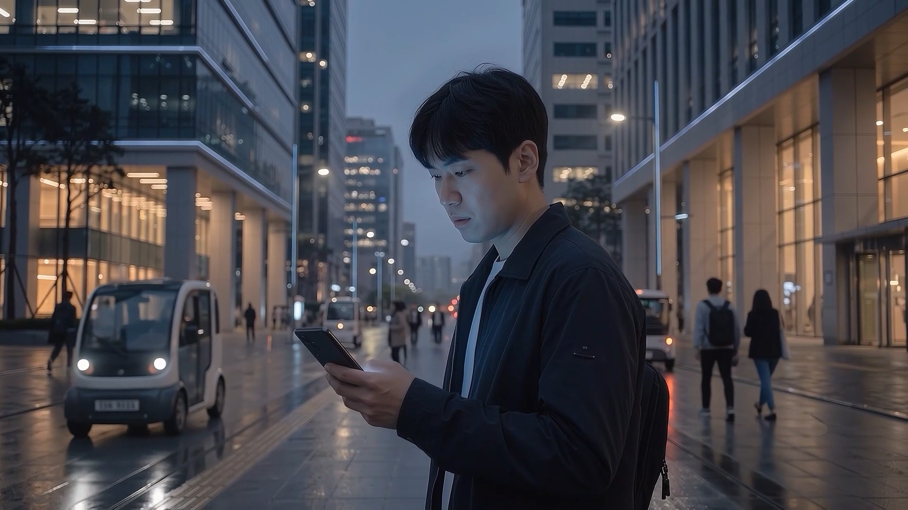
SC03개인이 이상을 인지한다
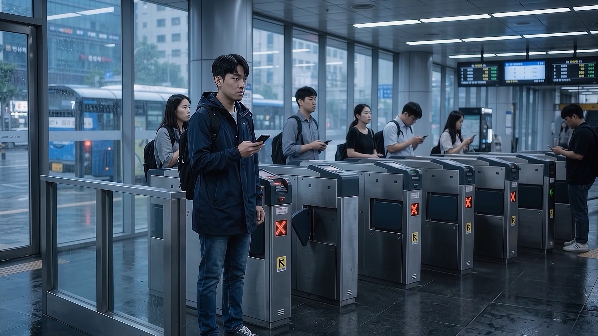
SC04장애가 공공 시스템으로 확산된다
하나의 신호가 도시로 퍼진다
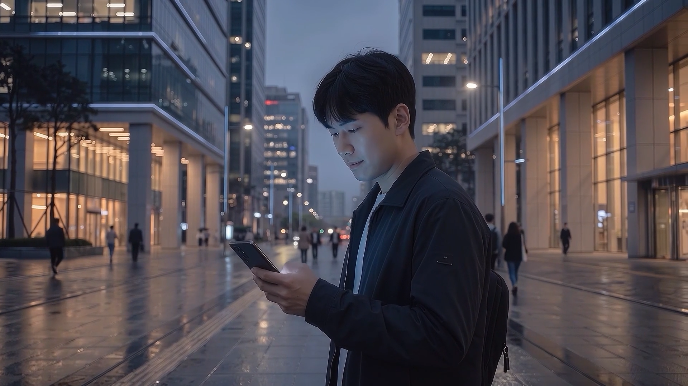
SC06연결이 일상으로 돌아온다
완성된 연결과 브랜드 메시지
04 / PROBLEM SOLVING
SC04의 역할을 ‘개인의 장애가 도시 시스템으로 확장되는 순간’으로 다시 정의했습니다. 두 구성을 비교한 뒤 공공 시스템 장애가 더 빠르게 읽히는 개찰구 이미지를 최종 선택했습니다.
결과적으로 개인 → 공공 시스템 → 도시로 이야기의 규모가 자연스럽게 확장되었습니다.
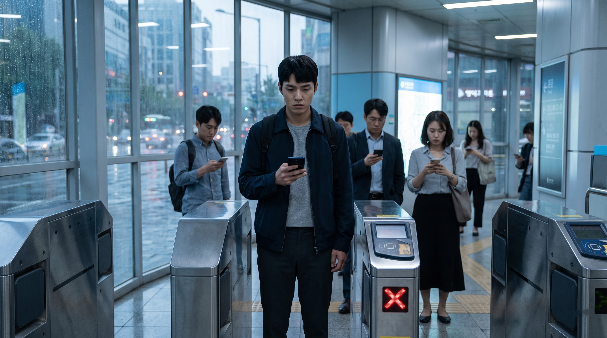
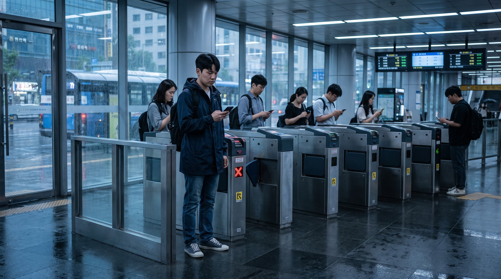
개인의 이상 징후에서 공공 시스템 장애를 거쳐 도시 재연결로 이어지는 흐름.
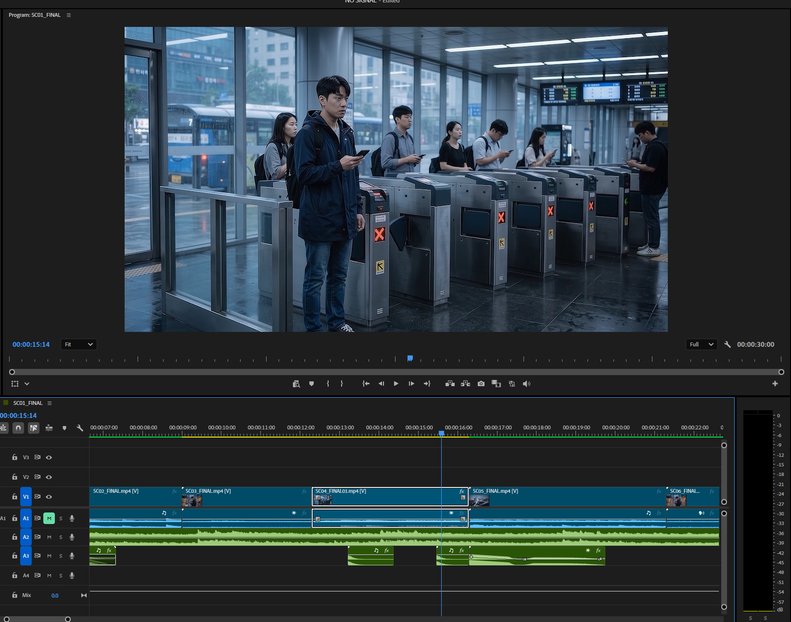
툴을 유지하는 것보다결과의 안정성과 전달력을 우선했습니다.
05 / WORKFLOW
각 단계에서 여러 결과를 검토하고 장면의 목적에 맞는 선택을 반복해 하나의 Final Film으로 연결했습니다.
브랜드 메시지와 감정 곡선 정의
7개의 장면 역할과 연결 구조 설계
장면별 정지 이미지 생성·비교
모션과 일관성 검토 후 영상 생성
장면 목적을 기준으로 최종안 선택
30초 Picture Lock과 Hard Cut 리듬
BGM과 핵심 SFX로 전환점 설계
Color · Typography · Audio QC
06 / EDITING · SOUND · COLOR
생성 결과를 이어 붙이는 데서 끝내지 않고, 편집·사운드·색보정을 통해 하나의 톤과 리듬으로 마감했습니다.
7개의 생성 장면을 Hard Cut 중심으로 재구성하고 장면 길이와 시선의 흐름으로 리듬을 설계했습니다.
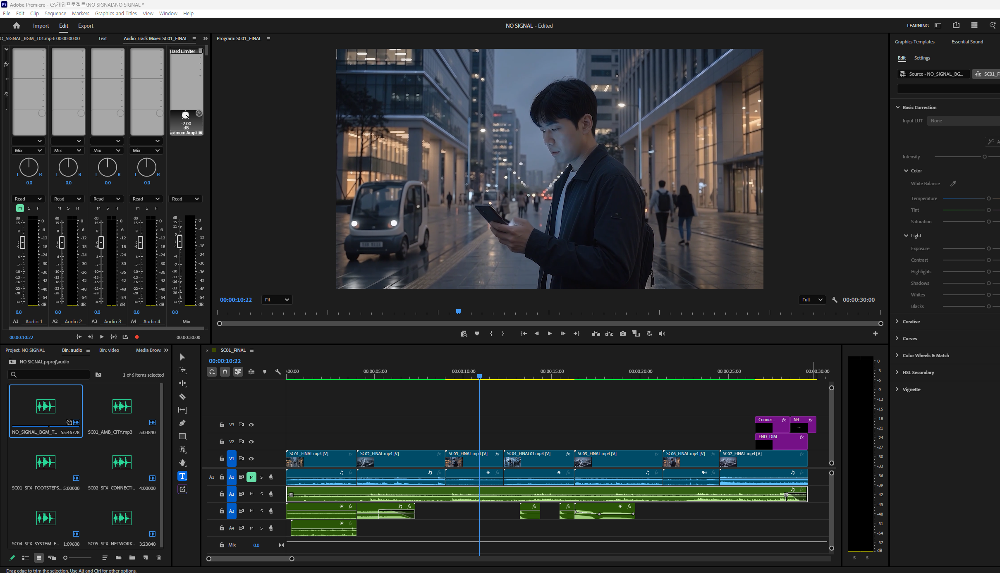
효과음을 많이 사용하는 대신 이야기의 의미가 바뀌는 세 순간에만 핵심 SFX를 배치했습니다.
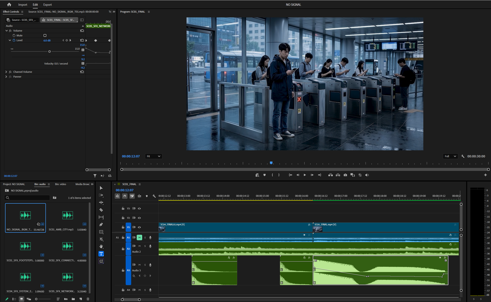
장면마다 다른 밝기와 색온도를 Blue-gray 기준으로 정리하되, 인물 장면의 따뜻한 도시광은 남겨 같은 세계 안에서 감정만 달라지도록 조정했습니다.
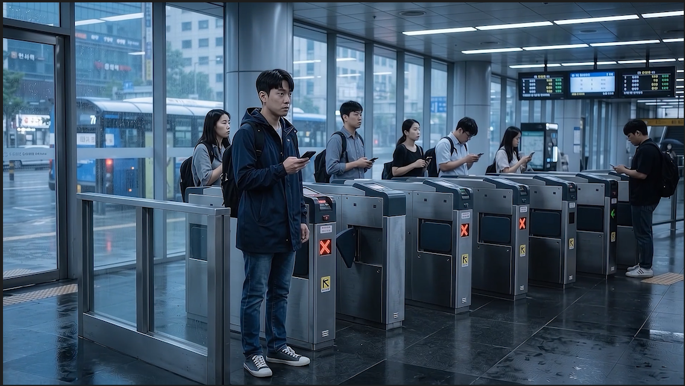
07 / RESULT
AI BRAND FILM · 30 SEC · 2026
AI 생성 결과를 넘어, 하나의 메시지와 흐름을 가진 브랜드 필름으로 완성했습니다.